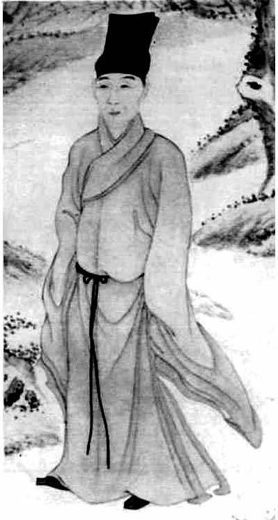
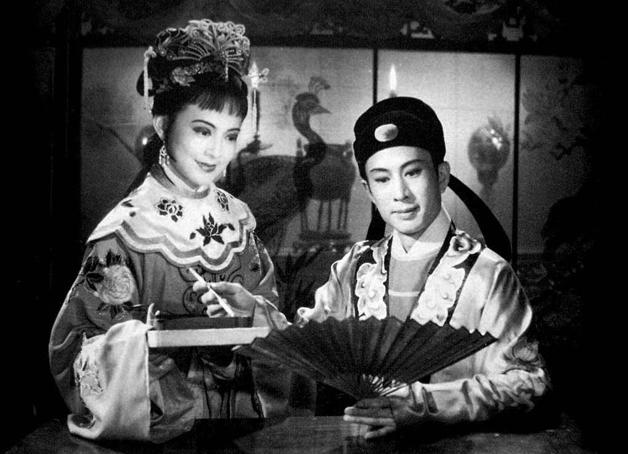

一
明之亡，本身像一部悬疑小说，仁者见仁，智者见智。历来，各家各派依其所思，说什么的都有。
其中，有位孔夫子后人，名叫孔尚任，写了一部戏剧，题为《桃花扇》，洋洋十余万言。要说这部剧作的品质，以笔者看来，真无愧世界戏剧史上任何佳作。不单单是文辞的优美、人物的鲜活，更因它开创性地采取了全纪实的叙事。除因情节构造之需，于若干细节有所虚构或想象外，大部分内容都来自真凭实据。所谓“朝政得失，文人聚散，皆确考时地，全无假借。至于儿女钟情，宾客解嘲，虽稍有点染，亦非乌有子虚之比。”[1]作者就像今之学者做论文那样，以一篇《桃花扇考据》，专门列出他所本的主要材料，一方面显示作品的严肃，一方面亦备有兴趣的看客或读者索证稽核。而且他对材料的搜集，并不以案头为满足，利用各种机会，踏访实地，亲问旧人。以我孤陋的见闻，远在十七世纪（《桃花扇》“凡三易稿而书成”，最后脱稿于1699年），以这种方式和意识产生的剧作，仿佛只有《桃花扇》。
剧中主要角色三：一位妓女，一位才子，一位奸佞。他们之间，通过一柄折扇串接起来。妓女恋慕才子，才子以扇定情，奸佞从中破坏，妓女因此血溅折扇——所谓“桃花”，便是溅于扇面的血迹，按照作者的原话：“桃花者，美人之血痕也”[2]。
这自是一段古典凄美的爱情，如将其视为“才子佳人”故事，予以体会、感喟和唏嘘，颇为自然。然而，作者却给我们打预防针。他说，只看表面的话，《桃花扇》要么是“事之鄙焉者”，要么是“事之细焉者”，要么是“事之轻焉者”，乃至是“事之猥亵而不足道者”。[3]这绝非他写作的目的。写这作品，在他是一个已揣了几十年的梦想：“予未仕时，每拟作此传奇，恐闻见未广，有乖信史”，是极郑重的。他回顾，自己还在少年时，族中一位长辈因曾亲身经历，“得弘光遗事甚悉”，“数数为予言之”，特别是“香姬面血溅扇，杨龙友以画笔点之”这一情节，对他触动甚深；多年萦绕，终于酿成一个构思——以“南朝兴亡”，“系之桃花扇底”。[4]所以，在类乎序言的《桃花扇小引》里，他特别点明该剧主旨是：
知三百年之基业，隳于何人？败于何事？消于何年？歇于何地？不独令观者感慨涕零，亦可惩创人心，为末世之一救矣。[5]
用我们今天话说，虽然题材和情节似乎是吟风弄月，《桃花扇》的真实主题却并非爱情，而在政治。这极为有趣。如果我所记不错，在政治中挖掘性的元素和影响，或者说从性的角度解读政治，是上世纪六十年代随文化批评时髦起来的视点。而孔尚任写《桃花扇》，竟似在十七世纪末已得此意。这样讲，是否夸张，抑或有所“拔高”，读过《桃花扇》的人不难鉴识。剧中，李香君这一元素，实际起到一种隐喻的作用，来代表人心向背、是非取舍和政治褒贬。作者让政治立场去决定一位美人的情意所归——政治“正确”者，得她芳心倾许；而政治上的丑类，辄令她性趣荡然。
尤应指出，这位美人，除容貌、颜色上被赋予种种的美妙，从而对于男性普遍地构成梦中情人般的吸引，还特有一个“妓女”的身份。这使她的含义格外具体、固定和突出，而根本区别于“普通”女子。换言之，从身体到社会角色，无论“自然属性”或“社会属性”，她都是一个明确、强烈而纯粹的性的符号。在她身上，那种性之于政治的隐喻意味，不单单是毋庸置疑，简直也就是唯一的意味。
不妨看看剧中有怎样的体现。第二十四出“骂宴”，当着几位奸佞，迷人樱唇吐出了如许的娇音：
东林伯仲，俺青楼皆知敬重。干儿义子从新用，绝不了魏家种。[6]

侯方域绘像。
侯方域，即侯朝宗，明末“四公子”之一。河南归德人。崇祯间应试南京，流寓于此，与秦淮名妓李香相恋，参加复社活动，忤阮大铖。弘光时，阮得势欲逮之入狱，走脱，投史可法幕。

电影《桃花扇》。
《桃花扇》，孔尚任作，演述崇、弘之间南京的政治斗争。这斗争，在明朝已延续四十年之久。此二者间的消长，关乎江山社稷兴亡。在孔尚任看来，南渡之后阉党得势，是弘光政权病入膏肓、不可救药的标志。
在第二十一出，马士英得知其党田仰的聘礼为香君所拒，气急败坏：
了不得，了不得！一位新任漕抚，拏银三百，买不去一个妓女。岂有此理！难道是珍珠一斛，偏不能换蛾眉。[7]
而阮大铖的几句唱，切齿之余，则酸溜溜地散发了醋意：
当年旧恨重提起，便折花损柳心无悔。那侯朝宗空空梳栊了一番。看今日琵琶抱向阿谁。[8]
权力、金钱与性之间向来的对等，突然消失，“新任漕抚，拏银三百，买不去一个妓女”、“珍珠一斛，偏不能换蛾眉”，抑或权力、金钱所暗含的性优势被公然无视，唤起几位高级男性政客内心深刻的失落。来自美艳妓女、天生尤物的否定，较诸直接的政治挫折，也许更加令人意气难平。
孔尚任却显然从中感觉到快慰。实际上，他是把“性”作为奖赏给予所称颂的一方，也作为鄙夷而给予了另一方。在他，这是历史批判的一种依托，一种方式。此即开场第一出侯方域登台自报家门时点出的“久树东林之帜”、“新登复社之坛”，以及吴应箕那句“小弟做了一篇留都防乱的揭帖”，所共同透露的内容——一直以来存在于南京且日趋激烈的党派斗争。这斗争，在明朝已延续四十年之久，一边是作为近倖小人集团的阉党，一边是坚持道义、真理与改革的知识分子阵营。此二者间的消长，关乎江山社稷兴亡；至少在孔尚任看来，南渡之后阉党得势，是弘光政权病入膏肓、不可救药的标志。